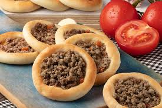

A preparação de uma pizza é um processo que requer paciência, habilidade e um pouco de arte. Aqui estão alguns
passos para preparar uma pizza caseira:
- Escolha a massa: A primeira coisa que você precisa fazer é escolher a massa certa. A massa de pizza pode variar
de leve a pesada, dependendo do tipo de pizza que você está fazendo. Para uma pizza de margherita, por exemplo,
você pode usar uma massa de pizza leve. Para uma pizza de pepperoni, você pode usar uma massa de pizza mais
pesada.
- Preparação da massa: Depois de escolher a massa, você precisa prepará-la. Isso geralmente envolve aquecer a
massa em um forno pré-aquecido até que esteja quente e flexível. Em seguida, você pode esticá-la e esticá-la até
que tenha a espessura desejada.
- Adicione os ingredientes: A próxima etapa é adicionar os ingredientes à sua massa. Isso pode incluir queijo,
presunto, cogumelos, tomate, alho, azeitonas e outros ingredientes, dependendo do tipo de pizza que você está
fazendo. Lembre-se de adicionar os ingredientes em camadas, começando com a base e terminando com o topo.
- Assar a pizza: Depois de adicionar todos os ingredientes, você pode assar a pizza em um forno pré-aquecido. A
temperatura do forno deve ser alta o suficiente para queimar a massa, mas não demais para queimar os
ingredientes. A pizza deve ser assada até que esteja bem dourada e o queijo esteja derretido.
-
Corte e sirva: Finalmente, você pode cortar a pizza em fatias e servir. Lembre-se de que a melhor pizza é aquela
que é compartilhada com amigos e familiares.
A preparação de uma pizza caseira é um processo que requer paciência e habilidade, mas o resultado final é sempre
gratificante. Além disso, a preparação de uma pizza caseira é uma ótima maneira de experimentar diferentes tipos de
massa e ingredientes, e de criar suas próprias receitas únicas.